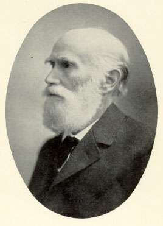

|  |
Leber's congenital amaurosis = Syndrome characterised by severe visual deficiency, with total or nearly total blindness, present at birth or shortly thereafter.
Leber's miliary aneurysm = A form of unilateral exudative retinopathy occurring in children before puberty, it is now considered as a milder form of Coat's disease.
Leber's optic atrophy = A rare hereditary form of optic atrophy that usually affects young males.
Theodor Leber was the son of a professor of languages in Karlsruhe. Initially he was attracted to the study of chemistry, but the great professor Robert Wilhelm Eberhard Bunsen (1811-1899) advised him to study medicine, as there were far too many chemists. He was a pupil of Hermann Ludwig Ferdinand von Helmholtz (1821-1894), Karl Friedrich Wilhelm Ludwig (1816-1895), and Albrecht Friedrich Wilhelm Ernst von Graefe (1828-1870) in Heidelberg, Vienna, and Berlin. He received his doctorate in Heidelberg in 1862 and spent a year as an assistant to Herman Jakob Knapp (1832-1911) there. He was assistant at the Heidelberg eye clinic 1862-1863
Leber subsequently went to Vienna to study physiology, but soon turned to ophthalmology, becoming assistant to von Graefe in Berlin for the period 1867-1870. He was habilitated for ophthalmology in Berlin in 1869. He became professor extraordinary of opthalmology and director of the university eye clinic in Göttingen in 1871, and in 1890 he was called to the chair and the directorship of the Eye Clinic at Heidelberg, where he remained until his retirement in 1910.
From 1871 Leber was co-publisher and geschäftsführender editor of Albrecht von Grafe's Archiv für Ophthalmologie.
A scholarship given by the German Ophthalmological Society is named for him: Theodor-Leber-Stipendium zur Förderung der pharmakologischen und pharmakophysiologischen Forschung in der Augenheilkunde.